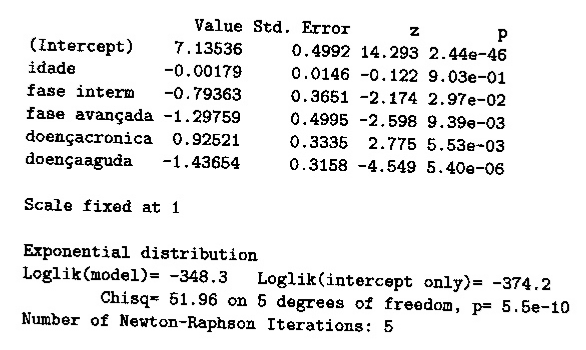
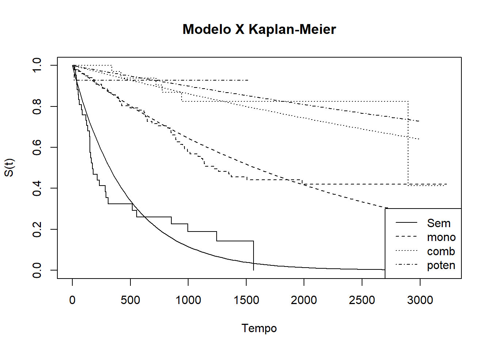
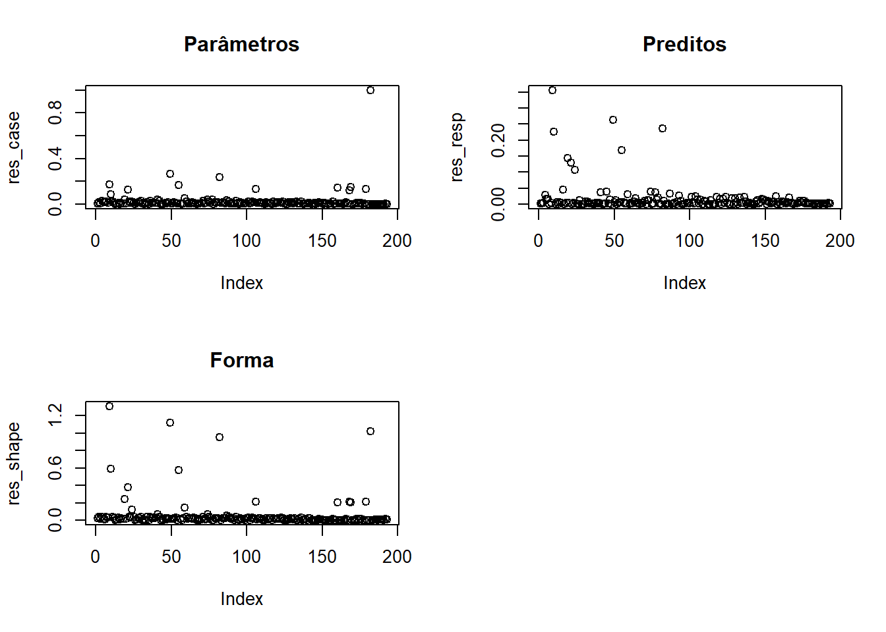

Exercícios Capítulo 5 - Modelos paramétricos
Pacotes e opções
Exercícios
5.1
Em um estudo, ajustou-se um modelo exponencial aos tempos de sobrevivência observados (em meses) nos grupos controle e tratamento. Os modelos encontrados foram:
\(S_tr(t) = exp(-0,07t)\), para o grupo tratamento
Com base nesses modelos, responda:
- Qual foi o risco instantâneo estimado para o grupo controle? E para o grupo recebendo tratamento?
- Qual foi a sobrevivência média e mediana no grupo controle? E no grupo recebendo tratamento?
- As duas curvas estimadas de sobrevivência são apresentadas na figura a seguir. Localize, nessa figura, o tempo mediano e médio calculado. Analisando o gráfico, você acha que o tratamento teve efeito na sobrevivência desses pacientes?

O risco instantâneo estimado pode ser obtido através da seguinte expressão:
\[\lambda(t) = f(t)/S(t)\] Sendo \(f(t) = \alpha exp(-\alpha t)\) e \(S(t) = exp(-\alpha t)\), e \(\alpha_{c} = 0,07\) e \(\alpha_{tr} = 0,04\), podemos afirmar que:
O risco instantâneo para o grupo de controle é: \[\lambda _c(t) = \frac{0,07 exp(-0,07 t)}{exp(-0,07 t)} = 0,07\] E para o grupo de tratamento é: \[\lambda _{tr}(t) = \frac{0,04 exp(-0,04 t)}{exp(-0,04 t)} = 0,04\]
A sobrevivência mediana pode ser estimada igualando \(S(t) = 0,5\), enquanto o tempo médio de sobrevivência no modelo exponencial pode ser estimado por \(\frac{1}{\alpha}\).
Ou seja, para o grupo de controle, o tempo médio de sobrevivência é dado por \[\frac{1}{\alpha_c} = \frac{1}{0,07} = 14,2857\] e o tempo mediano de sobrevivência é dado por \[0,5 = exp(-0,07t)\] \[\frac{\ln(2)}{\alpha_c} = \frac{\ln(2)}{0,07} = 9,9\]
Ou seja, para o grupo de tratamento, o tempo médio de sobrevivência é dado por \[\frac{1}{\alpha_{tr}} = \frac{1}{0,07} = 14,2857\] e o tempo mediano de sobrevivência é dado por \[0,5 = exp(-0,04t)\] \[\frac{\ln(2)}{\alpha_{tr}} = \frac{\ln(2)}{0,04} = 17,3\]
Podemos plotar as curvas de sobrevivência com os pontos relevantes para a sobrevivência mediana e média nas duas curvas:
# Curve para a plotagem de CONTROLE
alfa = 0.07
curve(exp(-alfa * x), from = 0, to = 25, ylab = "S(t)", xlab = "Tempo")
# Mediana do modelo exponencial
p50 <- log(1/0.5)/alfa
# Média do modelo exponencial
pm <- 1/alfa
# Segmentos de reta e pontos para a plotagem
# Mediana
segments(p50, 0, p50, exp(-alfa * p50), lty = 3)
segments(-1, exp(-alfa * p50), p50, exp(-alfa * p50), lty = 3)
points(p50, exp(-alfa * p50), pch = 16)
# Media
segments(pm, 0, pm, exp(-alfa * pm), lty = 3)
segments(-1, exp(-alfa * pm), pm, exp(-alfa * pm), lty = 3)
points(pm, exp(-alfa * pm), pch = 16)
# Curve para a plotagem de TRATAMENTO
alfa = 0.04
curve(exp(-alfa * x), from = 0, to = 25, ylab = "S(t)", xlab = "Tempo", add = TRUE, lty = 2)
# Mediana do modelo exponencial
p50 <- log(1/0.5)/alfa
# Média do modelo exponencial
pm <- 1/alfa
# Segmentos de reta e pontos para a plotagem
# Mediana
segments(p50, 0, p50, exp(-alfa * p50), lty = 3)
segments(-1, exp(-alfa * p50), p50, exp(-alfa * p50), lty = 3)
points(p50, exp(-alfa * p50), pch = 16)
text(p50, exp(-alfa * p50), "Mediana", adj = c(1.5, -0.25))
# Media
segments(pm, 0, pm, exp(-alfa * pm), lty = 3)
segments(-1, exp(-alfa * pm), pm, exp(-alfa * pm), lty = 3)
points(pm, exp(-alfa * pm), pch = 16)
text(pm, exp(-alfa * pm), "Média", adj = c(1.5, -0.25))
# Legendas
legend("topright", c("Controle", "Tratamento"), lty = 1:2)
Tanto pela análise gráfica, quanto pela análise dos tempos, é provável que o tratamento tenha tido efeito na sobrevivência dos pacientes.
5.2
Estude no R o efeito do parâmetro \(\alpha\) no modelo paramétrico exponencial.
- Construa gráficos da função de sobrevivência utilizando \(\alpha = 0,1\), \(\alpha = 0,5\) e \(\alpha = 0,7\).
- Calcule o tempo mediano de sobrevivência para modelos com \(\alpha = 0,1\), \(\alpha = 0,5\) e \(\alpha = 0,7\).
- Calcule os percentis 90% (P90) e 10% (P10), isto é, os tempos em que 90% e 10% dos pacientes ainda não tinham sofrido o evento.
- O que você conclui sobre o parâmetro \(\alpha\) e seu comportamento no modelo exponencial de sobrevivência?
# Funções de sobrevivência
alfa_1 = 0.1
alfa_2 = 0.5
alfa_3 = 0.7
curve(
exp(-alfa_1 * x),
from = 0,
to = 25,
ylab = "S(t)",
xlab = "Tempo",
main = expression(paste(Parametro, " ", alpha)),
ylim = c(0, 1),
lty = 1
)
curve(
exp(-alfa_2 * x),
from = 0,
to = 25,
ylab = "S(t)",
xlab = "Tempo",
add = TRUE,
lty = 2
)
curve(
exp(-alfa_3 * x),
from = 0,
to = 25,
ylab = "S(t)",
xlab = "Tempo",
add = TRUE,
lty = 3
)
legend("topright",
legend = expression(alpha == 0.1, alpha == 0.5, alpha == 0.7),
lty = 1:3)
## [1] 6.931472## [1] 1.386294## [1] 0.9902103## [1] 1.053605## [1] 23.02585## [1] 0.210721## [1] 4.60517## [1] 0.150515## [1] 3.289407Sendo o único parâmetro da distribuição exponencial, alfa governa o nível ou a intensidade com que a curva de sobrevivência decresce. Em outras palavras, quanto maior o alfa, mais rapidamente os pacientes evoluem para o evento e menores seram as medidas de sobrevivência, como a mediana e a média.
5.3
Com relação ao modelo paramétrico Weibull, responda:
- Por que o modelo Weibull é considerado mais flexível do que o modelo exponencial?
- Em que situação particular o modelo Weibull é equivalente ao exponencial?
- Qual a relação entre o parâmetro de forma \(\gamma\) e o comportamento da função de risco?
- Quais das curvas de risco apresentadas na Figura 3.3 não poderiam ser modeladas pela função Weibull, nem mesmo aproximadamente?
O modelo Weibull agrega um segundo parâmetro de forma \(\gamma\) adicional ao parâmetro \(\alpha\) de nível e, por isso, consegue alterar o formato da curva de maneira mais substancial e modelar situações em que o risco cresce ou decresce ao longo do período de estudo. No evento em que o risco seja constante ao longo do estudo, o modelo de Weibull torna-se idêntico ao exponencial e o valor de \(\gamma\) se iguala a 1. No caso do parâmetro \(\gamma > 1\), o risco é crescente ao longo do tempo, já no caso de \(\gamma < 1\) o risco decresce com o tempo. Observando a figura 3.3 reproduzida abaixo, é evidente que não possível utilizar a distribuição de Weibull para as figuras D, E e F, pois o padrão de risco não é uniformemente crescente ou decrescente.

5.4
Seja T o tempo de sobrevivência de até a ocorrência de um evento que segue uma distribuição Weibull com parâmetros \(\gamma = 1,5\) e \(\alpha = 0,13\).
- Faça gráfico das funções de sobrevivência \(S(t)\), de risco (\(\lambda(t)\)) e de risco acumulado (\(\Lambda(t)\)).
- Use o R para construir os gráficos das funções acima.
- Calcule o tempo mediano de sobrevivência, e os percentis 80 e 10 dessa distribuição.
- Fixe o valor do parâmetro \(\alpha = 0,13\) e faça gráficos da função de risco e da função de sobrevivência para diversos valores do parâmetro de forma \(\gamma\):
- \(0 < \gamma < 1\),
- \(\gamma = 1\),
- \(\gamma > 1\)
- Interprete como o parâmetro de forma \(\gamma\) afeta o comportamento do risco e da sobrevivência.
alfa = 0.13
gama = 1.5
par(mfrow = c(2, 2))
# Sobrevivencia
curve(
exp(-(alfa * x) ^ gama),
from = 0,
to = 20,
ylab = "S(t)",
xlab = "t",
main = "Sobrevivência"
)
# Risco
curve(
alfa * gama * (alfa * x) ^ (gama - 1),
from = 0,
to = 20,
ylab = expression(lambda(t)),
xlab = "t",
main = "Risco"
)
# Risco acumulado
curve((alfa * x) ^ gama,
from = 0,
to = 20,
ylab = expression(Lambda(t)),
xlab = "t",
main = "Risco acumulado"
)
## [1] 6.024767## [1] 2.829955## [1] 13.41324gama_1 = 0.25
gama_2 = 1
gama_3 = 1.75
# Gama = 0.25
par(mfrow = c(1, 2))
# Sobrevivência
curve(
exp(-(alfa * x) ^ gama_1),
from = 0,
to = 20,
ylab = "S(t)",
xlab = "t",
main = expression(gamma == 0.25)
)
# Risco
curve(
alfa * gama_1 * (alfa * x) ^ (gama_1 - 1),
from = 0,
to = 20,
ylab = expression(lambda(t)),
xlab = "t",
main = expression(gamma == 0.25)
)
# Gama = 1
par(mfrow = c(1, 2))
# Sobrevivência
curve(
exp(-(alfa * x) ^ gama_2),
from = 0,
to = 20,
ylab = "S(t)",
xlab = "t",
main = expression(gamma == 1)
)
# Risco
curve(
alfa * gama_2 * (alfa * x) ^ (gama_2 - 1),
from = 0,
to = 20,
ylab = expression(lambda(t)),
xlab = "t",
main = expression(gamma == 1)
)
# Gama = 1.75
par(mfrow = c(1, 2))
# Sobrevivência
curve(
exp(-(alfa * x) ^ gama_3),
from = 0,
to = 20,
ylab = "S(t)",
xlab = "t",
main = expression(gamma == 1.75)
)
# Risco
curve(
alfa * gama_3 * (alfa * x) ^ (gama_3 - 1),
from = 0,
to = 20,
ylab = expression(lambda(t)),
xlab = "t",
main = expression(gamma == 1.75)
)
O parâmetro gama afeta principalmente os formatos das curvas de sobrevivência e risco. No caso da curva de sobrevivência, um valor de \(0 < \gamma < 1\) descreve uma distribuição em que os desfechos se concentram no início do tempo de observação, enquanto \(\gamma > 1\) descreve uma distribuição em que os eventos tendem a ocorrer mais tarde. No caso da curva de risco, o primeiro caso é no qual o risco descrece exponencialmente, enquanto o segundo o risco cresce exponencialmente. O caso em que \(\gamma = 1\) é apenas uma distribuição exponencial comum, no qual o parâmetro não oferece nenhuma informação adicional.
5.5
Em um estudo sobre o tempo de incubação de uma infecção verificou-se que T é adequadamente descrito por uma função Weibull com parâmetros \(\gamma = 1,2\) e \(\alpha = 0,07\).
- Calcule o tempo mediano de incubação desta infecção.
- É correto dizer que 10 horas após a infecção, espera-se que 80% das pessoas já tenha desenvolvimento sintomas?
- O risco de surgimento de sintomas é crescente ou decrescente ao longo do tempo?
## [1] 10.52583## [1] 21.23882# Função de risco
curve(
alfa * gama * (alfa * x) ^ (gama - 1),
from = 0,
to = 20,
ylab = expression(lambda(t)),
xlab = "t",
main = "Risco"
)
Podemos ver acima o tempo mediano da infecção e que levou 21.2388248 horas para que 80% das pessoas manifestassem sintomas, por fim, o gráfico mostra o risco crescente ao longo do tempo, consistente com o parâmetro \(\gamma > 1\).
5.6
Mil crianças não vacinadas são acompanhadas, a partir do nascimento, em um estudo cujo objetivo é identificar a idade em que adquirem hepatite A. Os resultados do estudo indicam que média da soroconversão das crianças foi de 4,5 anos e que o risco de contrair hepatite A foi constante e independente da idade.
- Proponha um modelo paramétrico para o tempo até a aquisição de hepatite A.
- Faça no R o gráfico da função de sobrevivência, de acordo com esse modelo.
- Com base nesse modelo, em que idade espera-se ter 90% das crianças soropositivas?
- Após esse estudo, um projeto de saneamento é implementado nesta comunidade. Para avaliar o efeito do saneamento na transmissão de hepatite A, uma nova coorte é montada, semelhante à anterior. Ao analisar os dados dessa nova coorte, encontramos que um modelo Weibull com parâmetros \(\gamma = 1,3\) e \(\alpha = 0,1\) descreve bem a curva de sobrevivência. Com base nessa informação, avalie qual foi o efeito do saneamento no risco de contrarir hepatite A nessa comunidade. Sugestão: compare os gráficos das funções de sobrevivência.
Dado o risco para a contração da hepatite ser constante na primeira coorte, o modelo paramétrico adequado é exponencial.
# Cálculo do alfa do modelo exponencial
alfa = 1/4.5
alfa_san = 0.1
gama = 1.3
# Idade em que 90% das crianças são soropositivas
log(1/0.1)/alfa## [1] 10.36163# Gráfico da função de sobrevivência
curve(
exp(-alfa * x),
from = 0,
to = 25,
ylab = "S(t)",
xlab = "Tempo",
main = "Comparação entre as funções das duas coortes",
ylim = c(0, 1)
)
curve(
exp(-(alfa_san * x) ^ gama),
from = 0,
to = 25,
lty = 2,
add = TRUE
)
legend("topright",
legend = c("Pré-saneamento", "Pós-saneamento"),
lty = 1:2)
Utilizando a comparação gráfica entre as duas funções de sobrevivência, fica claro que o saneamento reduziu as infecções por hepatite A.
5.7
Retorne ao exemplo do primeiro exercício do Capítulo 4, sobre tempo de aleitamento de crianças (arquivo leite.txt).
- Ajuste uma distribuição Weibull ao tempo de aleitamento. Existe evidência de que o modelo Weibull seja mais adequado que o exponencial?
- Qual o tempo mediano de amamentação estimado por esse modelo?
- Faça um gráfico da curva de sobrevivência ajustada pelo modelo Weibull, junto com o gráfico de Kaplan-Meier. O modelo paramétrico representa bem os dados?
leite <- data.frame(tempo = c(6L, 12L, 10L, 3L, 5L, 1L, 6L, 8L, 1L, 5L, 2L, 2L, 5L, 8L, 1L),
status = 1L,
crianca = 1:15)
# Modelo Weibull
leite_wei <- survreg(Surv(tempo, status) ~ 1, data = leite, dist = "weibull")
leite_wei## Call:
## survreg(formula = Surv(tempo, status) ~ 1, data = leite, dist = "weibull")
##
## Coefficients:
## (Intercept)
## 1.713409
##
## Scale= 0.6601589
##
## Loglik(model)= -37.5 Loglik(intercept only)= -37.5
## n= 15#Modelo exponencial
leite_exp <- survreg(Surv(tempo, status) ~ 1, data = leite, dist = "exponential")
leite_exp## Call:
## survreg(formula = Surv(tempo, status) ~ 1, data = leite, dist = "exponential")
##
## Coefficients:
## (Intercept)
## 1.609438
##
## Scale fixed at 1
##
## Loglik(model)= -39.1 Loglik(intercept only)= -39.1
## n= 15## Terms Resid. Df -2*LL Test Df Deviance Pr(>Chi)
## 1 1 14 78.28314 NA NA NA
## 2 1 13 74.97531 = 1 3.307824 0.06895072# Comparação gráfica do ajuste
leite_km <- survfit(Surv(tempo, status) ~ 1, data = leite)
alfa_wei <- exp(-leite_wei$coefficients)
gama_wei <- 1/leite_wei$scale
plot(leite_km, conf.int = F)
curve(
exp(-(alfa_wei * x) ^ gama_wei),
from = 0,
to = 12,
lty = 2,
add = TRUE
)
## [1] 1.653912A análise visual do modelo em relação ao Kaplan-Meier sugere que o modelo se ajustou bem aos dados, porém, a análise formal de variância não encontrou diferenças estatisticamente significativas entre o modelo Weibull e o modelo exponencial, apesar de existir uma diferença (1.6539122) na verossimilhança em favor do modelo Weibull.
5.8
O banco de dados leite2.txt contém dados do tempo de aleitamento de crianças de quatro comunidades. No ajuste não-paramétrico a esses dados, observamos que pertencer a uma comunidade não teve efeito no período de aleitamento. Confirme este achado, ajustando um modelo paramétrico a esses dados. Experimente com as distribuições exponencial e Weibull.
leite2 <- data.frame(id = 1:60,
tempo = c(6L, 12L, 10L, 3L, 5L, 1L, 6L, 8L, 1L, 5L, 2L, 2L,
5L, 8L, 1L, 5L, 12L, 10L, 4L, 4L, 3L, 6L, 9L, 2L,
6L, 4L, 1L, 7L, 10L, 1L, 13L, 14L, 20L, 3L, 5L, 1L,
8L, 15L, 2L, 5L, 3L, 2L, 6L, 15L, 1L, 1L, 16L, 20L,
1L, 1L, 1L, 1L, 2L, 2L, 13L, 3L, 1L, 1L, 14L, 2L),
status = 1,
grupo = rep(1:4, each = 15))
leite2## id tempo status grupo
## 1 1 6 1 1
## 2 2 12 1 1
## 3 3 10 1 1
## 4 4 3 1 1
## 5 5 5 1 1
## 6 6 1 1 1
## 7 7 6 1 1
## 8 8 8 1 1
## 9 9 1 1 1
## 10 10 5 1 1
## 11 11 2 1 1
## 12 12 2 1 1
## 13 13 5 1 1
## 14 14 8 1 1
## 15 15 1 1 1
## 16 16 5 1 2
## 17 17 12 1 2
## 18 18 10 1 2
## 19 19 4 1 2
## 20 20 4 1 2
## 21 21 3 1 2
## 22 22 6 1 2
## 23 23 9 1 2
## 24 24 2 1 2
## 25 25 6 1 2
## 26 26 4 1 2
## 27 27 1 1 2
## 28 28 7 1 2
## 29 29 10 1 2
## 30 30 1 1 2
## 31 31 13 1 3
## 32 32 14 1 3
## 33 33 20 1 3
## 34 34 3 1 3
## 35 35 5 1 3
## 36 36 1 1 3
## 37 37 8 1 3
## 38 38 15 1 3
## 39 39 2 1 3
## 40 40 5 1 3
## 41 41 3 1 3
## 42 42 2 1 3
## 43 43 6 1 3
## 44 44 15 1 3
## 45 45 1 1 3
## 46 46 1 1 4
## 47 47 16 1 4
## 48 48 20 1 4
## 49 49 1 1 4
## 50 50 1 1 4
## 51 51 1 1 4
## 52 52 1 1 4
## 53 53 2 1 4
## 54 54 2 1 4
## 55 55 13 1 4
## 56 56 3 1 4
## 57 57 1 1 4
## 58 58 1 1 4
## 59 59 14 1 4
## 60 60 2 1 4## Call:
## survreg(formula = Surv(tempo, status) ~ factor(grupo), data = leite2,
## dist = "exp")
##
## Coefficients:
## (Intercept) factor(grupo)2 factor(grupo)3 factor(grupo)4
## 1.60943791 0.11332869 0.40989971 0.05195974
##
## Scale fixed at 1
##
## Loglik(model)= -165.2 Loglik(intercept only)= -166
## Chisq= 1.58 on 3 degrees of freedom, p= 0.663
## n= 60## Call:
## survreg(formula = Surv(tempo, status) ~ factor(grupo), data = leite2,
## dist = "wei")
##
## Coefficients:
## (Intercept) factor(grupo)2 factor(grupo)3 factor(grupo)4
## 1.6512059 0.1052854 0.4263509 0.1264246
##
## Scale= 0.8391741
##
## Loglik(model)= -163.8 Loglik(intercept only)= -164.9
## Chisq= 2.19 on 3 degrees of freedom, p= 0.534
## n= 60Os resultados da estimação não paramétrica se mantém. Os modelos ajustados com o fator grupo não apresentaram resultados significativamente melhores que os resultados do modelo nulo. Os \(p\)-valores foram não-significativos.
5.9
Um estudo foi realizado para estimar o efeito do transplante de medula óssea na sobrevivência de pacientes com lecuemia. As covariáveis analisadas foram: idade, fase da doença, ter ou não desenvolvido doença enxerto crônico e ter ou não desenvolvido doença enxerto aguda (para mais detalhes acerca desse estudo, refira-se ao Apêndice 12.4). Um modelo exponencial ajustado aos dados, apresenta a seguinte saída do R:

Observe a saída do R e responda:
- O modelo com covariáveis é melhor do que o modelo nulo (sem covariáveis)?
- Que covariáveis estão associadas com maior sobrevivência? Quais estão associadas com a redução da sobrevivência?
- Escreva a função de risco, \(\lambda(t)\), estimada para esta coorte.
- Qual seria o risco de óbito de um paciente de 30 anos, em fase intermediária, com doença crônica?
- Qual seria o risco de óbito de um paciente de 30 anos, em fase intermediária, com doença aguda?
- Um segundo modelo, mais simples, foi ajustado aos dados, contendo apenas a covariável fase. O logaritmo da função de verossimilhança deste modelo simples foi de -363,6. Compare este modelo com o mais completo ajustado anteriormente e indique se este último resultou em melhor ajuste.
O modelo com covariáveis é melhor que o modelo nulo, pois a diferença entre as razões de verossimilhança entre o modelo ajustado e o nulo é estatisticamente significativa.
# Coeficientes do modelo
coef <- c("intercept" = 7.13536,
"idade" = -0.00179,
"fase interm" = -0.79363,
"fase avancad" = -1.29759,
"doncacronica" = 0.92521,
"doencaaguda" = -1.43654)
# Variáveis associadas a maior/menor sobrevivência
exp(-coef[-1])## idade fase interm fase avancad doncacronica doencaaguda
## 1.0017916 2.2114093 3.6604643 0.3964482 4.2061174# Risco de óbito de um paciente de 30 anos
# com doença crônica
exp(-(coef[1] + coef[2]*30 + coef[3]*1 + coef[4]*0 + coef[5]*1 + coef[6]*0))## intercept
## 0.0007367662## intercept
## 0.007816722As variáveis associadas a uma menor sobrevivência são fase intermediária e avançada e doença aguda, enquanto uma maior sobrevivência está associada a doença crônica. A idade não apresentou resultado significativo (\(p > 0.05\)).
A função de risco estimada para esta coorte pode ser descrita pela equação, note que o tempo não aparece do lado direito da equação, pois no modelo exponencial, o risco é dado como constante:
\[\lambda(t|x)=exp(-(7.13536 + -0.00179 \times idade - 0.79363 \times f.interm - 1.29759 \times f.avanç + 0.92521 \times d.cron - 1.43654 \times d.agud))\]
Considerando o ajuste do modelo mais completo ter um loglik de -348.3 e o modelo com apenas fase ter um loglik de 363.6, avalia-se que o modelo mais completo resultou em melhor ajuste.
5.10
A Aids passou a ter tratamento apenas 1991. Desde então a terapia antirretroviral evoluiu da monoterapia para a terapia combinada (2 ou mais componentes) e, por fim, para a terapia de alta potência (no mínimo 3 componentes, sendo um inibidor de protease). Espera-se que as terapias mais recentes sejam mais efetivas em aumentar a sobrevivência. Teste esta hipótese ajustando um modelo exponencial aos dados da coorte de Aids (banco ipec.csv - Apêndice 12.4).
- Ajuste um modelo com a variável tratamento apenas. O modelo com a variável tratamento é melhor do que o modelo sem covariáveis? Interprete o efeito dos tratamentos na sobrevivência (lembrando-se que os efeitos dos tratamentos estão sendo estimados em relação à ausência do tratamento).
- Faça uma análise gráfica do ajuste do modelo, comparando-o com a curva de Kaplan-Meier estratificada por tratamento. O que você tem a dizer sobre a adequação do modelo exponencial?
- Faça a análise de resíduos do modelo estimado. Existe algum ponto influente, sobre a estimativa dos parâmetros (ldcase), sobre os valores preditos (ldresp) ou sobre o parâmetro de forma?
- Caso considere algum ponto muito influente, retire-o e refaça a análise.
- Ajuste um outro modelo exponencial, adicionando variáveis de controle (sexo, idade e tipo de atendimento). Quais variáveis tiveram efeito significativo? Quais tiveram efeito protetor?
## id ini fim tempo status sexo escola idade risco acompan obito anotrat
## 1 1 1243 2095 852 1 M 3 34 0 1 S 1991
## 2 2 2800 2923 123 1 M 2 38 6 1 S 9
## 3 3 1250 2395 1145 1 M NA 32 0 1 S 1992
## 4 4 1915 4670 2755 0 M NA 43 6 0 N 1992
## 5 5 2653 4770 2117 0 M NA 40 0 1 N 1992
## 6 6 3 332 329 0 M NA 34 0 1 I 9
## 7 7 36 96 60 1 M NA 27 0 2 S 9
## 8 8 1 152 151 1 M 0 22 6 2 S 9
## 9 9 544 2107 1563 1 M 2 44 NA 0 S 9
## 10 10 71 1318 1247 1 M 2 23 0 2 S 9
## 11 11 946 1030 84 1 M 1 40 0 1 S 9
## 12 12 802 1016 214 1 M 2 33 0 1 S 9
## 13 13 266 291 25 0 M NA 41 NA 1 I 9
## 14 14 1544 2892 1348 1 M NA 35 1 1 S 1992
## 15 15 57 215 158 1 M 1 45 0 2 S 9
## 16 16 1270 1825 555 1 M 3 35 0 0 S 9
## 17 17 2753 3161 408 1 M 2 42 0 1 S 1993
## 18 18 940 2056 1116 1 M 1 33 0 1 S 1990
## 19 19 393 1391 998 1 M 2 40 0 1 S 9
## 20 20 1000 2125 1125 1 M 2 23 0 0 S 1990
## 21 21 238 1182 944 0 M 1 51 0 1 I 9
## 22 22 423 477 54 1 M 2 47 0 2 S 9
## 23 23 206 357 151 1 F 1 27 6 2 S 9
## 24 24 480 1335 855 1 M 3 51 0 0 S 9
## 25 25 226 342 116 1 F 0 22 1 2 S 9
## 26 26 249 329 80 0 M 3 46 0 2 I 9
## 27 27 3052 4809 1757 0 M 1 40 5 1 N 1995
## 28 28 1802 1996 194 1 M 0 40 0 1 S 1992
## 29 29 1395 1578 183 1 M 2 45 0 1 S 1990
## 30 30 354 391 37 1 M 3 49 0 1 S 9
## 31 31 493 730 237 0 M 0 37 0 2 I 9
## 32 32 1113 2619 1506 1 M 0 50 NA 1 S 1992
## 33 33 638 806 168 0 M 3 28 2 0 I 9
## 34 34 655 789 134 1 F NA 52 3 1 S 9
## 35 35 1189 1992 803 0 M 1 25 0 1 I 1990
## 36 36 943 961 18 1 M 1 34 6 1 S 9
## 37 37 1715 2086 371 1 M 2 35 0 1 S 1992
## 38 38 792 965 173 1 F 0 61 3 1 S 9
## 39 39 1037 1725 688 1 M 2 33 0 2 S 1990
## 40 40 820 983 163 1 F 0 32 NA 2 S 9
## 41 41 884 4062 3178 0 M 2 32 5 1 S 1991
## 42 42 2262 2291 29 1 M 2 32 0 1 S 9
## 43 43 1121 1171 50 0 M 2 27 0 2 I 9
## 44 44 1131 2018 887 1 M 0 43 1 1 S 1992
## 45 45 878 1394 516 1 M 0 31 0 2 S 9
## 46 46 1316 1961 645 1 M 2 31 0 1 S 1991
## 47 47 1107 1417 310 1 M 0 25 0 2 S 9
## 48 48 1190 1394 204 1 M 3 35 NA 1 S 1991
## 49 49 393 1737 1344 0 M 2 30 0 2 I 9
## 50 50 1274 2535 1261 1 M 3 28 0 1 S 1992
## 51 51 1172 1457 285 1 M 0 26 0 1 S 9
## 52 52 2360 2443 83 1 M 1 23 0 1 S 1994
## 53 53 2074 2224 150 1 M 2 27 1 2 S 9
## 54 54 1019 2326 1307 0 M 0 47 2 0 I 1993
## 55 55 605 1681 1076 0 M 3 44 0 0 I 9
## 56 56 1915 3141 1226 1 M 2 34 0 1 S 1990
## 57 57 3948 4813 865 0 F 0 46 3 1 N 1992
## 58 58 1314 2125 811 1 M 3 53 0 0 S 1991
## 59 59 1502 4400 2898 1 M 2 37 0 1 S 1998
## 60 60 1347 1427 80 1 M 0 31 0 2 S 9
## 61 61 1379 2346 967 1 M 1 33 5 1 S 1991
## 62 62 2352 2970 618 1 M 2 30 0 1 S 1994
## 63 63 2625 2860 235 1 F 2 31 3 1 S 9
## 64 64 2586 4822 2236 0 M 2 54 5 1 N 1992
## 65 65 1406 1558 152 1 M 1 47 6 2 S 9
## 66 66 1466 2358 892 1 M 2 31 0 1 S 1992
## 67 67 3314 3395 81 0 F 0 33 3 0 I 1995
## 68 68 3413 4498 1085 1 M 2 47 0 1 S 1993
## 69 69 3712 4785 1073 0 F 2 43 3 0 N 1997
## 70 70 3207 4822 1615 0 M 1 34 0 1 N 1993
## 71 71 1592 1627 35 1 M 0 29 0 1 S 9
## 72 72 1537 1827 290 1 M 0 32 2 1 S 9
## 73 73 3018 4798 1780 0 M 3 37 3 0 N 1993
## 74 74 1555 4783 3228 0 F 2 25 3 1 N 1993
## 75 75 1541 1593 52 1 M 0 38 0 1 S 9
## 76 76 1589 2322 733 1 M 1 40 NA 1 S 1992
## 77 77 1609 4822 3213 0 M 2 29 1 0 N 1996
## 78 78 1682 3665 1983 1 F 2 36 3 1 S 1992
## 79 79 2465 4769 2304 0 M 2 42 0 0 N 1992
## 80 80 1243 1815 572 1 M 2 26 0 1 S 1991
## 81 81 1667 1688 21 1 M 3 55 2 1 S 1992
## 82 82 1605 2877 1272 0 M 2 22 0 0 I 9
## 83 83 3157 4803 1646 0 M 0 41 0 0 N 1997
## 84 84 2066 2370 304 1 M 1 40 0 1 S 1993
## 85 85 1929 2347 418 1 F 0 20 NA 2 S 1993
## 86 86 2216 3070 854 1 F 2 34 3 1 S 1993
## 87 87 1809 4782 2973 0 F 2 37 1 1 N 1993
## 88 88 1670 1710 40 1 M 0 31 NA 2 S 9
## 89 89 1983 2833 850 1 M 0 38 2 1 S 1993
## 90 90 2883 4022 1139 1 M 2 31 5 1 S 1993
## 91 91 1766 2089 323 1 M 3 25 0 2 S 1992
## 92 92 3313 4820 1507 0 F 0 32 NA 1 N 1993
## 93 93 1977 4694 2717 0 M 1 25 0 0 N 1993
## 94 94 3087 4822 1735 0 M 3 42 0 0 N 1992
## 95 95 2286 2674 388 0 M 2 24 1 0 I 1992
## 96 96 1877 2022 145 1 F 0 38 3 2 S 1993
## 97 97 1852 2757 905 1 F 0 36 3 1 S 1992
## 98 98 1549 2476 927 1 M 2 31 3 1 S 1992
## 99 99 3795 4822 1027 0 F 1 32 NA 1 N 1998
## 100 100 2475 3106 631 1 M 0 29 0 1 S 1994
## 101 101 2310 4805 2495 0 M 0 29 0 1 N 1994
## 102 102 2870 4201 1331 0 F 0 49 2 1 I 1996
## 103 103 1935 2558 623 1 M 3 44 0 1 S 1993
## 104 104 2199 4767 2568 0 M 0 38 0 1 N 1996
## 105 105 2800 4813 2013 0 M 1 39 5 1 N 1993
## 106 106 2990 3711 721 1 F 1 31 5 1 S 1997
## 107 107 2857 4809 1952 0 F 2 66 3 0 N 1995
## 108 108 3586 3983 397 1 M 0 47 0 1 S 1994
## 109 109 2143 2397 254 1 M 0 29 3 1 S 1992
## 110 110 3124 4754 1630 0 M 0 55 0 1 N 1994
## 111 111 3276 4799 1523 0 M 1 41 5 1 N 1994
## 112 112 2208 2354 146 0 M 0 44 NA 1 I 1994
## 113 113 2209 2317 108 1 M 0 41 0 1 S 1993
## 114 114 2976 4811 1835 0 M 0 68 5 1 N 1995
## 115 115 2626 3125 499 1 M 0 39 5 1 S 1994
## 116 116 3838 4171 333 1 F 1 45 3 1 S 1996
## 117 117 2314 2516 202 0 M 3 36 NA 0 I 1994
## 118 118 2311 4748 2437 0 M NA 30 0 1 N 1994
## 119 119 2280 3295 1015 1 M 2 27 0 1 S 1994
## 120 120 2684 4822 2138 0 M 2 26 0 1 N 1995
## 121 121 2454 2476 22 1 F 1 28 3 1 S 1994
## 122 122 2713 4803 2090 0 M 3 45 5 1 N 1994
## 123 123 2311 2490 179 1 M 1 39 0 2 S 9
## 124 124 2370 4809 2439 0 F 0 33 2 0 N 1996
## 125 125 3756 4819 1063 0 M 0 53 0 1 N 1995
## 126 126 2565 2650 85 0 M 1 37 1 1 S 9
## 127 127 2599 2942 343 0 M 2 28 0 0 I 1994
## 128 128 2553 4768 2215 0 M 2 29 0 0 N 1995
## 129 129 2601 2860 259 1 M 2 29 0 2 S 1993
## 130 130 2553 4811 2258 0 M 1 35 0 1 N 1995
## 131 131 2726 4097 1371 1 F 0 24 NA 1 S 1995
## 132 132 2739 2778 39 1 M 1 35 0 1 S 1995
## 133 133 2447 4818 2371 0 M 2 32 0 1 N 1996
## 134 134 3830 4805 975 0 F 0 38 3 0 N 1995
## 135 135 2429 3381 952 1 M 0 40 5 1 S 1995
## 136 136 2311 4803 2492 0 F 1 29 NA 0 N 1995
## 137 137 3299 4777 1478 0 F 0 35 3 0 N 1995
## 138 138 4510 4805 295 0 M 1 45 5 0 N 1997
## 139 139 2384 3376 992 1 M NA 49 5 0 S 1995
## 140 140 3749 4760 1011 0 M 0 31 0 0 N 1995
## 141 141 2676 3320 644 1 M 3 34 NA 1 S 1995
## 142 142 2985 3411 426 1 M 1 33 6 1 S 1996
## 143 143 4192 4729 537 0 F 3 44 NA 1 N 1995
## 144 144 3159 4613 1454 0 M 0 33 0 1 N 1995
## 145 145 2921 4790 1869 0 M 3 46 0 1 N 1996
## 146 146 4078 4792 714 0 F 2 36 3 0 N 1996
## 147 147 2934 4244 1310 0 M 3 37 0 1 I 1991
## 148 148 2645 4729 2084 0 F 1 31 3 1 N 1996
## 149 149 2857 4775 1918 0 M 3 37 0 0 N 1996
## 150 150 3173 4822 1649 0 M 2 25 NA 0 N 1996
## 151 151 4509 4799 290 0 F 2 28 3 0 N 1996
## 152 152 3082 4767 1685 0 F 0 50 NA 0 N 1996
## 153 153 3465 4813 1348 0 F 0 25 3 0 N 1997
## 154 154 3188 3840 652 0 M 0 41 NA 2 I 1998
## 155 155 3271 4655 1384 0 M 2 35 NA 0 N 1996
## 156 156 3276 4747 1471 0 F 2 26 NA 1 N 1997
## 157 157 3287 4799 1512 0 M 1 32 0 2 N 1998
## 158 158 4439 4817 378 0 F 0 39 3 0 N 1998
## 159 159 3446 4798 1352 0 M 1 45 3 0 N 1995
## 160 160 3305 3724 419 1 M 1 38 0 2 S 1996
## 161 161 3391 4817 1426 0 F 2 51 3 0 N 1996
## 162 162 3307 4795 1488 0 F 2 43 NA 0 N 1996
## 163 163 3425 4740 1315 0 M 2 25 0 1 N 1997
## 164 164 4117 4760 643 0 F 0 24 NA 0 N 1997
## 165 165 3612 4809 1197 0 F 0 35 NA 1 N 1997
## 166 166 3479 4822 1343 0 M 1 33 0 1 N 1997
## 167 167 3572 4748 1176 0 F 0 22 3 0 N 1997
## 168 168 3796 4740 944 1 F 1 27 3 0 S 1997
## 169 169 3527 3867 340 1 M 1 53 NA 2 S 1994
## 170 170 3921 4802 881 0 F 1 24 3 1 N 1998
## 171 171 3798 4713 915 0 M 1 67 3 0 N 1998
## 172 172 3808 4756 948 0 M 0 25 0 0 N 1998
## 173 173 3772 4757 985 0 M 2 36 0 0 N 1998
## 174 174 3557 4799 1242 0 M 2 33 NA 0 N 1997
## 175 175 3867 4822 955 0 M 2 24 NA 2 N 1998
## 176 176 3594 4581 987 0 M 1 46 NA 0 N 1998
## 177 177 3923 4822 899 0 F 1 49 NA 1 N 1998
## 178 178 3733 4789 1056 0 F 1 65 5 0 N 1997
## 179 179 4019 4794 775 1 M 1 34 0 2 S 1998
## 180 180 4033 4818 785 0 F 0 30 NA 0 N 1998
## 181 181 4040 4771 731 0 M 3 46 1 0 N 1998
## 182 182 4053 4069 16 1 M NA 42 NA 2 S 1998
## 183 183 4137 4817 680 0 M 1 46 NA 2 N 1999
## 184 184 4208 4229 21 0 M 0 32 0 2 I 9
## 185 185 4362 4806 444 0 F 0 38 NA 0 N 1999
## 186 186 4279 4803 524 0 F 0 31 NA 2 N 1999
## 187 187 4593 4810 217 0 F 0 32 NA 0 N 2000
## 188 188 4320 4760 440 0 M 0 21 NA 2 N 1999
## 189 189 4343 4813 470 0 M 3 41 NA 2 N 1999
## 190 190 4419 4809 390 0 M 1 24 0 0 N 2000
## 191 191 4406 4750 344 0 M 2 51 5 2 N 2000
## 192 192 4199 4777 578 0 M 0 33 0 0 N 2000
## 193 193 4301 4805 504 0 M 1 48 0 0 N 1999
## tratam doenca propcp
## 1 1 4 3
## 2 0 7 4
## 3 1 3 4
## 4 1 10 4
## 5 1 5 4
## 6 0 7 0
## 7 0 7 0
## 8 0 3 0
## 9 0 10 0
## 10 0 3 4
## 11 0 3 0
## 12 0 3 4
## 13 0 4 0
## 14 1 1 4
## 15 0 5 2
## 16 0 7 4
## 17 1 99 4
## 18 1 99 4
## 19 0 10 0
## 20 1 99 4
## 21 0 7 0
## 22 0 10 2
## 23 0 5 4
## 24 0 10 0
## 25 0 2 0
## 26 0 3 0
## 27 1 2 4
## 28 1 7 4
## 29 1 99 4
## 30 0 9 2
## 31 0 10 0
## 32 1 99 4
## 33 0 7 0
## 34 0 1 4
## 35 1 99 4
## 36 0 4 4
## 37 1 99 4
## 38 0 7 0
## 39 1 1 2
## 40 0 99 2
## 41 1 10 4
## 42 0 99 0
## 43 0 1 2
## 44 1 3 4
## 45 0 2 4
## 46 1 1 2
## 47 0 3 2
## 48 1 5 0
## 49 0 10 0
## 50 1 99 4
## 51 0 7 0
## 52 1 9 4
## 53 0 3 2
## 54 1 2 4
## 55 0 10 0
## 56 1 5 4
## 57 1 4 4
## 58 1 7 4
## 59 2 99 4
## 60 0 7 0
## 61 1 3 3
## 62 1 3 4
## 63 0 10 4
## 64 1 99 4
## 65 0 3 0
## 66 1 99 4
## 67 1 99 4
## 68 1 99 4
## 69 2 10 0
## 70 1 99 4
## 71 0 99 2
## 72 0 7 4
## 73 1 99 4
## 74 1 99 4
## 75 0 2 0
## 76 1 3 4
## 77 2 7 4
## 78 1 99 4
## 79 1 99 4
## 80 1 1 2
## 81 1 4 4
## 82 0 10 4
## 83 2 99 4
## 84 1 4 4
## 85 1 8 4
## 86 1 99 2
## 87 1 3 4
## 88 0 2 2
## 89 1 99 2
## 90 1 9 4
## 91 1 99 2
## 92 1 99 4
## 93 1 8 4
## 94 1 5 4
## 95 1 7 0
## 96 1 3 0
## 97 1 8 4
## 98 1 3 4
## 99 2 4 0
## 100 1 8 4
## 101 1 99 4
## 102 1 10 4
## 103 1 99 2
## 104 1 3 4
## 105 1 10 4
## 106 2 3 4
## 107 1 8 4
## 108 1 99 4
## 109 1 3 4
## 110 1 99 4
## 111 1 10 4
## 112 1 3 4
## 113 1 8 4
## 114 1 3 4
## 115 1 8 4
## 116 1 99 4
## 117 1 99 4
## 118 1 10 4
## 119 1 1 2
## 120 1 99 4
## 121 1 9 4
## 122 1 99 4
## 123 0 2 4
## 124 1 10 4
## 125 1 99 4
## 126 0 3 0
## 127 1 8 4
## 128 1 3 4
## 129 1 3 0
## 130 1 10 4
## 131 1 10 2
## 132 1 99 4
## 133 2 5 4
## 134 1 10 4
## 135 1 2 4
## 136 1 8 4
## 137 1 99 4
## 138 3 99 4
## 139 1 8 4
## 140 1 8 4
## 141 1 3 4
## 142 1 99 4
## 143 1 99 4
## 144 1 99 4
## 145 2 99 4
## 146 2 10 0
## 147 1 7 4
## 148 1 10 4
## 149 1 10 4
## 150 1 99 3
## 151 1 99 4
## 152 2 99 4
## 153 2 7 0
## 154 2 3 4
## 155 2 99 4
## 156 2 10 4
## 157 3 3 4
## 158 2 99 4
## 159 2 99 4
## 160 2 2 4
## 161 2 1 2
## 162 2 99 4
## 163 2 1 2
## 164 1 10 0
## 165 2 3 4
## 166 3 1 2
## 167 1 99 4
## 168 2 99 4
## 169 2 3 4
## 170 2 99 4
## 171 2 99 4
## 172 2 3 4
## 173 3 99 4
## 174 2 99 4
## 175 3 99 4
## 176 3 99 4
## 177 2 4 0
## 178 2 99 0
## 179 2 1 2
## 180 2 99 0
## 181 2 99 4
## 182 3 8 0
## 183 2 2 0
## 184 0 99 4
## 185 3 99 0
## 186 3 1 2
## 187 2 99 0
## 188 3 99 4
## 189 3 7 4
## 190 3 99 4
## 191 2 3 4
## 192 3 99 4
## 193 3 99 2# Modelo com a variável tratamento
mod_exp <- survreg(Surv(tempo, status) ~ tratam,
data = ipec,
dist = "exp")
mod_exp## Call:
## survreg(formula = Surv(tempo, status) ~ tratam, data = ipec,
## dist = "exp")
##
## Coefficients:
## (Intercept) tratam1 tratam2 tratam3
## 6.139211 1.593708 2.675714 3.013818
##
## Scale fixed at 1
##
## Loglik(model)= -742.9 Loglik(intercept only)= -774.6
## Chisq= 63.49 on 3 degrees of freedom, p= 1.06e-13
## n= 193## tratam1 tratam2 tratam3
## -0.7968292 -0.9311423 -0.9508962# Análise gráfica de ajuste do modelo
alfa_sem <- exp(-mod_exp$coef[1])
alfa_mono <- exp(-mod_exp$coef[2])
alfa_comb <- exp(-mod_exp$coef[3])
alfa_pot <- exp(-mod_exp$coef[4])
km <- survfit(Surv(tempo, status) ~ tratam, data = ipec)
plot(km,
lty = 1:4,
ylab = "S(t)", xlab = "Tempo",
main = "Modelo X Kaplan-Meier")
curve(exp(-alfa_sem * x),
from = 0, to = 3000,
ylim = c(0, 1),
lty = 1,
add = T)
curve(exp(-alfa_sem * alfa_mono * x),
from = 0, to = 3000,
ylim = c(0, 1),
lty = 2,
add = T)
curve(exp(-alfa_sem * alfa_comb * x),
from = 0, to = 3000,
ylim = c(0, 1),
lty = 3,
add = T)
curve(exp(-alfa_sem * alfa_pot * x),
from = 0, to = 3000,
ylim = c(0, 1),
lty = 4,
add = T)
legend("bottomright", lty = 1:4,
legend = c("Sem", "mono", "comb", "poten"))
# Análise de Resíduos
res_case <- residuals(mod_exp, type = "ldcase")
res_resp <- residuals(mod_exp, type = "ldresp")
res_shape <- residuals(mod_exp, type = "ldshape")
par(mfrow = c(2, 2))
plot(res_case, main = "Parâmetros")
plot(res_resp, main = "Preditos")
plot(res_shape, main = "Forma")
# Modelo sem alguns outliers
mod_exp2 <- survreg(Surv(tempo, status) ~ tratam,
data = ipec,
dist = "exp",
subset = -c(9, 49, 82))
mod_exp2## Call:
## survreg(formula = Surv(tempo, status) ~ tratam, data = ipec,
## subset = -c(9, 49, 82), dist = "exp")
##
## Coefficients:
## (Intercept) tratam1 tratam2 tratam3
## 5.840173 1.892747 2.974752 3.312856
##
## Scale fixed at 1
##
## Loglik(model)= -726.5 Loglik(intercept only)= -764.9
## Chisq= 76.92 on 3 degrees of freedom, p= <2e-16
## n= 190# Outro modelo com covariáveis adicionas
ipec$sexo <- factor(ipec$sexo)
ipec$acompan <- factor(ipec$acompan)
mod_exp3 <- survreg(Surv(tempo, status) ~ tratam + sexo + idade + acompan, data = ipec, dist = "exp")
summary(mod_exp3)##
## Call:
## survreg(formula = Surv(tempo, status) ~ tratam + sexo + idade +
## acompan, data = ipec, dist = "exp")
## Value Std. Error z p
## (Intercept) 7.95467 0.65538 12.14 < 2e-16
## tratam1 1.38695 0.29721 4.67 3.1e-06
## tratam2 2.21397 0.46565 4.75 2.0e-06
## tratam3 2.98559 1.01653 2.94 0.0033
## sexoM -0.07670 0.28325 -0.27 0.7866
## idade -0.00292 0.01204 -0.24 0.8087
## acompan1 -1.70869 0.40638 -4.20 2.6e-05
## acompan2 -2.23186 0.46640 -4.79 1.7e-06
##
## Scale fixed at 1
##
## Exponential distribution
## Loglik(model)= -723.5 Loglik(intercept only)= -774.6
## Chisq= 102.25 on 7 degrees of freedom, p= 3.7e-19
## Number of Newton-Raphson Iterations: 6
## n= 193
O modelo ajustado é melhor que o modelo sem covariáveis (RV < Nulo, \(p < 0.05\)). Os tratamentos apresentam efeitos protetores significativos (80, 93 e 95% respectivamente para o mono, o combinado e o potente).
A análise gráfica mostrou que os modelos exponenciais não se ajustam particularmente bem a estimação não-paramétrica de Kaplan-Meier, pois a ausência de parâmetros adicionais limita bastante o formato da curva para representar o fenômeno.
A análise dos resíduos revelou alguns indivíduos não tratados que apresentaram tempos de sobrevivência longos e um indívudo que recebeu terapia potente e faleceu rapidamente, o que dificultava o ajuste do modelo. Optei por remover os pacientes não tratados com altos tempos de sobrevivência, mas preservar o óbito tratado com potente, devido ao pequeno número de casos no banco gerar uma estimativa muito otimista da sobrevivência ao remover o único óbito registrado. O novo modelo se ajusta um pouco melhor aos dados.
Ao ajustar um modelo com covariáveis adicionais, como sexo e idade e tipo de atendimento, verificou-se que sexo e idade não foram significativas (\(p>0.05\)). Apenas os tratamentos tiveram efeito protetor.